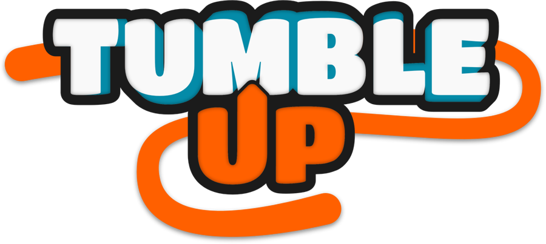
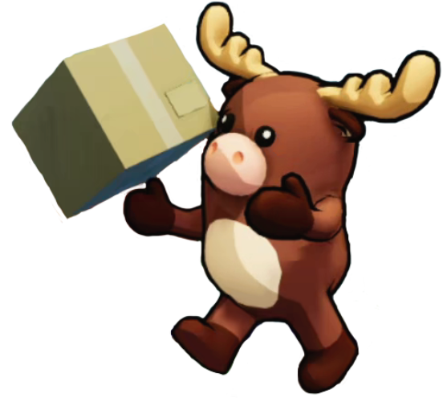

Team up, then knock your friends off the edge.


Tumble Up
Local Party Game / Unity C#2024 - 2025
Tumble Up is a local 2v2 party game built on physical minigames in Unity.
I worked as Producer and Game Designer, owning both the match pacing and the team organisation as SCRUM master.
Task Overview
- Designed 4 minigames and 8 maps around a shared match structure.
- Tuned match loops of 2 to 7 minigames as the real unit of design.
- Ran the project as SCRUM master: sprints, dailies and tracking.
- Validated group pacing through repeated local playtest sessions.
My Contributions
A party game lives or dies on the rhythm between matches, not inside a single one. I carried both the design of that rhythm and the team structure that made it possible to test.
- Match loop design Treated loops of 2 to 7 minigames as the real unit of design, so a session builds rivalry instead of ending before it starts.
- Minigame design Designed 4 minigames with distinct verbs, so the same group could extend a session without it feeling repetitive.
- Map design Built 8 maps that can enter and leave rotation without breaking the group's pacing.
- Social design details Used character customisation (cat, dog, monkey) as a team-identity tool, reinforcing the pairing right before a minigame turns partners against each other.
- SCRUM master Ran sprint planning, dailies and tracking spreadsheets for a team of five, prioritising which minigames entered each sprint.
What I learned
Designing for group fun is different from designing for a solo player: success is not whether the minigame works, it is whether the whole session leaves people wanting one more round. I also learned the limits of carrying design and production at once, since design iteration was what suffered in the heaviest production weeks.